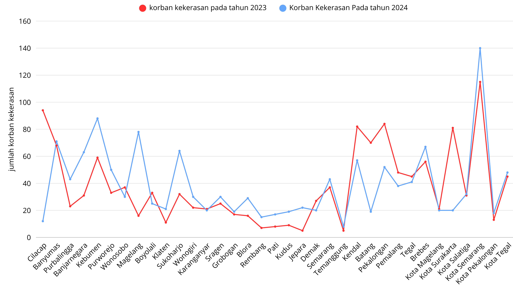

Peta Tematik: 2023 vs 2024
Perbandingan peta interaktif berdasarkan data kasus kekerasan anak tahun 2023 dan 2024 di Jawa Tengah.
Peta 2023 (Interaktif)
Peta QGIS tahun 2023
Peta 2024 (Interaktif)
Peta QGIS tahun 2024
Analisis Perubahan 2023–2024
Total kasus meningkat dari 1.224 kasus (2023) menjadi 1.304 kasus (2024). Kenaikan sebesar 80 kasus atau sekitar 6,5%.
Daerah dengan Kenaikan Tertinggi
- Magelang: +62
- Banjarnegara: +32
- Sukoharjo: +32
- Kebumen: +29
- Kota Semarang: +25
Daerah dengan Penurunan Tertinggi
- Cilacap: –82
- Kota Surakarta: –61
- Batang: –51
- Kendal: –25
- Pekalongan: –32
Tabel Perbandingan 35 Kabupaten/Kota
| No | Kabupaten/Kota | 2023 | 2024 | Selisih | Status |
|---|---|---|---|---|---|
| 1 | Cilacap | 94 | 12 | -82 | ▼ Turun |
| 2 | Banyumas | 68 | 71 | +3 | ▲ Naik |
| 3 | Purbalingga | 23 | 43 | +20 | ▲ Naik |
| 4 | Banjarnegara | 31 | 63 | +32 | ▲ Naik |
| 5 | Kebumen | 59 | 88 | +29 | ▲ Naik |
| 6 | Purworejo | 33 | 50 | +17 | ▲ Naik |
| 7 | Wonosobo | 37 | 30 | -7 | ▼ Turun |
| 8 | Magelang | 16 | 78 | +62 | ▲ Naik |
| 9 | Boyolali | 33 | 25 | -8 | ▼ Turun |
| 10 | Klaten | 11 | 21 | +10 | ▲ Naik |
| 11 | Sukoharjo | 32 | 64 | +32 | ▲ Naik |
| 12 | Wonogiri | 22 | 30 | +8 | ▲ Naik |
| 13 | Karanganyar | 21 | 20 | -1 | ▼ Turun |
| 14 | Sragen | 25 | 30 | +5 | ▲ Naik |
| 15 | Grobogan | 17 | 19 | +2 | ▲ Naik |
| 16 | Blora | 16 | 29 | +13 | ▲ Naik |
| 17 | Rembang | 7 | 15 | +8 | ▲ Naik |
| 18 | Pati | 8 | 17 | +9 | ▲ Naik |
| 19 | Kudus | 9 | 19 | +10 | ▲ Naik |
| 20 | Jepara | 5 | 22 | +17 | ▲ Naik |
| 21 | Demak | 27 | 20 | -7 | ▼ Turun |
| 22 | Semarang | 37 | 43 | +6 | ▲ Naik |
| 23 | Temanggung | 5 | 8 | +3 | ▲ Naik |
| 24 | Kendal | 82 | 57 | -25 | ▼ Turun |
| 25 | Batang | 70 | 19 | -51 | ▼ Turun |
| 26 | Pekalongan | 84 | 52 | -32 | ▼ Turun |
| 27 | Pemalang | 48 | 38 | -10 | ▼ Turun |
| 28 | Tegal | 45 | 41 | -4 | ▼ Turun |
| 29 | Brebes | 56 | 67 | +11 | ▲ Naik |
| 30 | Kota Magelang | 21 | 20 | -1 | ▼ Turun |
| 31 | Kota Surakarta | 81 | 20 | -61 | ▼ Turun |
| 32 | Kota Salatiga | 31 | 32 | +1 | ▲ Naik |
| 33 | Kota Semarang | 115 | 140 | +25 | ▲ Naik |
| 34 | Kota Pekalongan | 13 | 18 | +5 | ▲ Naik |
| 35 | Kota Tegal | 45 | 48 | +3 | ▲ Naik |
Grafik Perubahan Kasus 2023–2024
Berikut grafik visual yang menunjukkan naik/turunnya kasus per kabupaten/kota.
